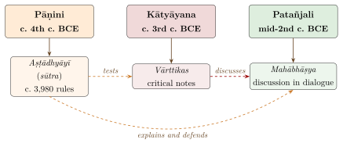
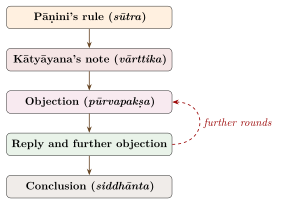

Chapter 7: Kātyāyana and Patañjali: The Mahābhāṣya¶
atha śabdānuśāsanam
Now [begins] the instruction in words.
— opening words of Patañjali’s Mahābhāṣya
7.1 The Three Sages¶
The later tradition regarded three authors as the founding authorities of Sanskrit grammar, the “three sages” (munitraya): Pāṇini (c. 4th century BCE) for the rules (sūtra); Kātyāyana (c. 3rd century BCE) for the critical notes on them (vārttika); and Patañjali (mid-2nd century BCE) for the great commentary (bhāṣya) that discusses both. “The grammar of the three sages” (trimuni vyākaraṇam) became a common name for the Pāṇinian system, and a maxim of the tradition holds that where the three differ, the later carries greater authority (yathottaraṃ munīnāṃ prāmāṇyam). In practice this meant that Patañjali’s judgements, where he decides that a rule is unnecessary or should be read differently, were accepted by later grammarians (Figure 7.1).

7.2 Kātyāyana’s Vārttikas¶
A vārttika, according to a definition current in the later tradition, is a work that considers what has been said, what has not been said and what has been badly said (ukta, anukta, durukta) in a basic text. Kātyāyana’s notes do exactly this. They test Pāṇini’s rules against usage, point out cases where a rule is too wide or too narrow, propose additional rules, and sometimes argue that a rule is unnecessary. They survive only as embedded in Patañjali’s Mahābhāṣya; Franz Kielhorn showed in 1876 how they can be separated from Patañjali’s own prose (Kielhorn 1876). Kātyāyana is traditionally identified with the author of the Vājasaneyi Prātiśākhya (Chapter 2), but the identification is uncertain.
Some of Kātyāyana’s notes record forms that Pāṇini’s rules do not produce, and scholars have long debated whether they show changes in the language between the two authors, regional differences, or simply oversights by Pāṇini (Cardona 1976; Deshpande 1993).
The first of Kātyāyana’s notes, discussed at length by Patañjali, states the presuppositions of the whole enterprise:
Kātyāyana, first vārttika
siddhe śabdārthasambandhe lokato ’rthaprayukte śabdaprayoge śāstreṇa dharmaniyamaḥ
“Since word, meaning and the relation between them are established, and since, following everyday usage, words are used in order to convey meanings, the science [of grammar] lays down a restriction for the sake of merit (dharma).”
The grammarian, in other words, does not create words or their meanings: these are given by usage. What grammar adds is a restriction (niyama) that distinguishes correct forms, whose use brings religious merit, from incorrect ones. Patañjali took siddha (“established”) to mean “eternal” (nitya), and the line became the starting point for long discussions of whether words are eternal.
7.3 Patañjali¶
7.3.1 Date¶
Patañjali’s date is one of the better-fixed points in early Indian chronology. In discussing the use of the present tense for an action still in progress he gives the example (on rule 3.2.123) iha puṣyamitraṃ yājayāmaḥ (“here we are performing sacrifices for Puṣyamitra”), referring to the founder of the Śuṅga dynasty, who ruled from about 185 BCE. To illustrate the imperfect tense for a recent event that the speaker could have witnessed, he gives (on 3.2.111) aruṇad yavanaḥ sāketam (“the Yavana besieged Sāketa”) and aruṇad yavano madhyamikām (“the Yavana besieged Madhyamikā”), usually taken to refer to an Indo-Greek incursion into the Gangetic plain in the 2nd century BCE. Patañjali is therefore generally dated to the mid-2nd century BCE (Cardona 1976; Scharfe 1977).
7.3.2 Identity¶
A later tradition identifies the grammarian Patañjali with the author of the Yogasūtra and with a writer on medicine. It is expressed in a verse, of uncertain and probably medieval origin, often recited before study:
Traditional verse (late; source uncertain)
yogena cittasya padena vācāṃ malaṃ śarīrasya ca vaidyakena
yo ’pākarot taṃ pravaraṃ munīnāṃ patañjaliṃ prāñjalir ānato ’smi
“With joined palms I bow to Patañjali, foremost of sages, who removed the impurity of the mind by yoga, of speech by grammar, and of the body by medicine.”
Most modern scholars distinguish the grammarian from the author of the Yogasūtra, which is now generally dated to c. 325–425 CE; the two works differ in vocabulary, style and doctrine.
7.4 Structure of the Mahābhāṣya¶
The Mahābhāṣya is divided into eighty-five “daily lessons” (āhnika), following the order of Pāṇini’s rules. It does not comment on every rule: it takes up rather less than half of them, mostly those on which Kātyāyana has notes, and sometimes others. Its method is that of dialogue. An objector raises a difficulty; another voice replies; the discussion moves through several rounds, often ending with Patañjali’s decision (siddhānta). The style is conversational, full of homely examples and illustrations from daily life, and it is one of the finest pieces of early Sanskrit prose (Joshi and Roodbergen 1986). See Figure 7.2.

7.5 The Introductory Lesson (Paspaśāhnika)¶
The first lesson, known as the Paspaśāhnika (“introduction”), is the most widely read part of the work. Here Patañjali asks what grammar is, why it should be studied, and what a word is (Joshi and Roodbergen 1986).
7.5.1 Why study grammar?¶
Patañjali gives five principal purposes, summed up in the compound rakṣohāgamalaghvasandehāḥ prayojanam (Table 7.1).
| Purpose | Explanation |
|---|---|
| rakṣā (protection) | Grammar protects the Vedas: one who knows it can tell where sounds have been lost, added or altered |
| ūha (adaptation) | Ritual formulas must be adapted to new contexts (for example by changing gender or number), which requires knowledge of grammar |
| āgama (scriptural injunction) | A Vedic statement prescribes that a Brahmin should study the Veda with its six auxiliaries, of which grammar is the chief |
| laghu (economy) | Grammar is the shortest route to the knowledge of words |
| asandeha (removal of doubt) | Grammar resolves ambiguities, for example by showing which compound type, and so which meaning, an accent pattern indicates |
To illustrate economy, Patañjali tells how Bṛhaspati taught Indra the words of the language one by one, for a thousand divine years, without reaching the end. Since nobody can learn an infinite list, words must be learned through general rules with exceptions. He then lists further purposes, each tied to a Vedic text. One recalls the story, from the Śatapatha Brāhmaṇa, of the Asuras who were defeated because they mispronounced a ritual cry, and draws the moral that a Brahmin must not speak “barbarously” (na mlecchitavai), for an incorrect word is a mleccha. Another cites the verse, also found in the Pāṇinīya Śikṣā, about the sacrificer whose wrongly accented word indraśatru turned against him (Chapter 2). Another gives a grammatical reading of the Vedic riddle verse about the “four horns” of speech (Ṛgveda 4.58.3).
Patañjali is also clear that grammar does not create language. In a famous comparison, he observes that someone who needs a pot goes to the potter’s house and says “make me a pot, I have work to do with it”; but nobody who wants to use words goes to a grammarian’s house and asks him to make words. Words are taken from the world of usage, and grammar only regulates their correct use. This priority of usage over rule, already stated in Kātyāyana’s first note, is one of the foundations of the Pāṇinian tradition.
7.5.2 What is a word?¶
Patañjali begins with a famous question: in the utterance gauḥ (“cow”), what is the word? It is not the animal with its dewlap, tail, hump, hooves and horns; that is the thing meant (dravya). It is not the action, the quality or the universal. “That by whose utterance there arises the understanding of [a thing with] dewlap, tail, hump, hooves and horns, that is the word.” Or, as he also puts it, in common usage a sound by which a meaning is understood is called a word.
He also discusses whether the word is eternal (nitya) or produced (kārya). He notes that the question had been examined in detail in the Saṃgraha, a lost work attributed to Vyāḍi, and concludes that on either view grammar is to be undertaken. Elsewhere (on rule 1.1.70) he distinguishes the word itself, the sphoṭa, from the audible sound (dhvani) that is its quality: the same word may be uttered quickly or slowly, by different voices, just as a drum struck once may be heard far or near. This brief remark became the seed of Bhartṛhari’s much larger theory (Chapter 8).
7.5.3 Universal or individual?¶
Does a word denote a universal (ākṛti, “form”) or an individual thing (dravya)? Kātyāyana reports two earlier grammarians who held opposite views: Vājapyāyana, for whom a word denotes the universal, and Vyāḍi, for whom it denotes the individual. Patañjali’s answer is that Pāṇini accepted both: some of his rules (for example 1.2.58, which allows a plural to refer to a class) presuppose that words denote universals, while others (for example 1.2.64, on the “single remainder” that stands for several individuals) presuppose that they denote individuals.
7.5.4 Correct and incorrect words¶
Patañjali is clear that the incorrect forms are many and the correct few: “each word has many corrupt forms (apabhraṃśa); for the word gauḥ there are gāvī, goṇī, gotā, gopotalikā and so on.” Several of these are recognisable Prakrit forms, so the passage is evidence that Middle Indo-Aryan speech was widespread in his time (Deshpande 1993). He grants that the corrupt forms convey meaning as well as the correct ones; the difference lies in religious merit, not in communication.
7.6 Who Decides What Is Correct?¶
Grammar, for Patañjali, is ultimately based on usage, but on the usage of a particular group. In discussing rule 6.3.109 he asks how one is to know the correct forms of words not covered by rules, and answers: from the śiṣṭas, the “instructed” or “cultivated”. He defines them as Brahmins of Āryāvarta, the region bounded by the Himalaya and the Pāriyātra hills and lying east of the place where the Sarasvatī disappears and west of the “Black Forest”, who own no more grain than fits in a pot, are free from greed, are virtuous without ulterior motive, and have mastered some branch of learning without being taught. Their usage, not that of other groups, sets the standard (Deshpande 1993).
This definition matters for the social history of Sanskrit. It ties correctness to a male Brahmin elite of a particular region, and it explains why Sanskrit could be described as the language of the śiṣṭas. Madhav Deshpande has shown how, over the following centuries, Sanskrit increasingly became a learned, second language for its users, while the spoken languages developed from the Prakrits; and how grammarians’ attitudes to the vernaculars ranged from contempt to pragmatic acceptance (Deshpande 1993). Sheldon Pollock has traced how Sanskrit, from around the beginning of the Common Era, also became a language of royal inscriptions and courtly literature across South and Southeast Asia (Pollock 2006).
Patañjali was also aware of regional variation. He repeats Yāska’s observation about the Kamboja verb śav “to go” (Chapter 4), and adds that for “to go” the people of Surāṣṭra say hammati and those of the east and centre raṃhati, while the Āryas use gam.
7.6.1 Who learned grammar?¶
The grammarians’ own examples give glimpses of who studied grammar in their time. Pāṇini’s rules on feminine forms, and Kātyāyana’s notes on them, distinguish the wife of a teacher (ācāryānī, upādhyāyānī) from a woman who is herself a teacher (ācāryā, upādhyāyā or upādhyāyī), and the Mahābhāṣya uses as examples feminine words for women who studied particular grammatical or exegetical works. Such forms would hardly have been needed if no women taught or studied. They suggest that in the last centuries BCE some women of learned Brahmin families were educated in the sciences of language (Deshpande 1993).
The normative literature of the following centuries narrowed these possibilities. The Dharmaśāstras restrict the study of the Veda to men of the three upper varṇas, after initiation; women and Śūdras were excluded, and some texts prescribe harsh punishments for a Śūdra who hears or recites the Veda. Since grammar was justified above all as an auxiliary of the Veda, Sanskrit grammatical learning in the traditional schools was, for most of its history, the preserve of upper-caste, mostly Brahmin, men. There were always exceptions and alternatives. Buddhist and Jain monasteries taught grammar to monks and nuns of varied origin, and their grammarians (Section 5.16 and Chapter 9) produced some of the most widely used grammars of Sanskrit and Pali. Women poets wrote in Sanskrit and the Prakrits, and Sanskrit drama gave women characters Prakrit speech (Chapter 9). In the modern period, reformers and institutions opened Sanskrit learning to all, and Sanskrit and linguistics are now taught in universities without restriction of birth or gender.
Grammar and merit
Patañjali repeatedly links correct speech to religious merit (dharma). He quotes a Vedic saying that a single word correctly known and properly used becomes a wish-granting cow in heaven. Kātyāyana’s first note, as we saw, already justifies grammar by its contribution to dharma. This religious justification coexisted with very practical concerns: correct ritual, the adaptation of mantras, the clear understanding of texts. Later philosophers, above all Bhartṛhari, developed it into a view of grammar as a path to liberation.
7.7 Grammatical Discussions¶
Most of the Mahābhāṣya consists of technical discussion of particular rules, and it is here, rather than in the famous introduction, that Patañjali’s method can be seen at work: on the first rule of the grammar, on compounds, on the exceptions in the kāraka section, and on the principles by which rules are to be read.
7.7.1 The first rule¶
Patañjali’s discussion of the very first rule, vṛddhir ādaic (“ā, ai and au are called vṛddhi”), shows his method in miniature. Why, he asks in his comment on this rule, does Pāṇini put the defined term first and the sounds second, contrary to the order of his other definitions? One answer is auspiciousness: the teacher wished to begin his work with the word vṛddhi, which in ordinary language means “growth, prosperity”, so that the grammar might prosper and its students live long. Patañjali also discusses whether the technical term is needed at all, whether ādaic includes the long vowels, and how a defined term can apply to sounds in rules that come before the definition. The passage mixes the practical, the playful and the theoretical in a way typical of the whole work.
7.7.2 Compounds and their meaning¶
Under rule 2.1.1 (samarthaḥ padavidhiḥ, “a rule concerning words [applies to words] that are semantically connected”) Patañjali discusses what makes a compound such as rājapuruṣa (“king’s man”) possible. On one view the compound’s members acquire a single, unified meaning (ekārthībhāva); on another they simply remain mutually dependent (vyapekṣā), as in the phrase rājñaḥ puruṣaḥ. He shows that the two views have different consequences: for instance, one can say ṛddhasya rājñaḥ puruṣaḥ (“the man of the prosperous king”) but not ṛddhasya rājapuruṣaḥ in the same sense, because a member of a compound cannot normally be qualified from outside it.
7.7.3 Kārakas and their exceptions¶
Patañjali examines the many places where Pāṇini’s assignment of kārakas departs from what one might expect from meaning alone. Rule 1.4.46 (adhiśīṅsthāsāṃ karma) treats the place where one lies, stands or sits, after the preverb adhi, as the object rather than the locus: hence grāmam adhiśete “he lies in the village”, with the accusative. Rule 1.4.51 (akathitaṃ ca) treats certain non-specified participants as objects, giving double accusatives such as gāṃ dogdhi payaḥ “he milks milk from the cow”. Such cases show that the kārakas are grammatical categories, defined by the rules, and not simply labels for real-world roles.
7.7.4 Interpretive principles¶
The Mahābhāṣya discusses many interpretive principles (paribhāṣā) that later grammarians collected, culminating in Nāgeśa’s Paribhāṣenduśekhara. See Table 7.2.
| Principle | Meaning |
|---|---|
| sthānivad ādeśo ’nalvidhau (1.1.56) | A substitute behaves like the element it replaces, except in rules concerning individual sounds |
| ṣaṣṭhī sthāneyogā (1.1.49) | A genitive in a rule denotes the element to be replaced |
| yena vidhis tadantasya (1.1.72) | A rule stated for an element applies to forms ending in that element |
| pratyayaḥ, paraś ca (3.1.1–2) | What is introduced in this section is a suffix, and it follows its base |
| antaraṅgaṃ balīyaḥ | An internally conditioned operation is stronger than an externally conditioned one |
| utsargāpavāda | A special rule (apavāda) sets aside the general rule (utsarga) |
7.8 The Mahābhāṣya as a Historical Source¶
Patañjali’s examples are a valuable source for the history of the 2nd century BCE. Besides the references to Puṣyamitra and the Yavanas, he mentions that the Mauryas, wanting gold, set up images of gods (on rule 5.3.99); he describes performers (śobhikas) who enact the killing of Kaṃsa and the binding of Bali, one of the earliest references to dramatic performance in India (on rule 3.1.26); and he refers to coins such as the kārṣāpaṇa, to trades, food, games and festivals. Agrawala’s study of Pāṇini’s India drew on the same kind of evidence (Agrawala 1953).
7.9 Transmission and Influence¶
The Mahābhāṣya became the final authority of Pāṇinian grammar. Its later history was not smooth. Bhartṛhari tells, in verses near the end of the second book of his Vākyapadīya (2.484–486), that the tradition of grammar had been lost among Patañjali’s successors and survived among the southerners only as a bare text (granthamātra), until scholars beginning with Candrācārya, having obtained the tradition “from the mountain” (parvatāt), restored it; the Kashmiri chronicle Rājataraṅgiṇī also credits Candrācārya with reviving it. Bhartṛhari himself wrote a commentary on it, the Mahābhāṣyadīpikā, of which only a part survives in a single manuscript (Table 7.3).
| Work | Author | Date |
|---|---|---|
| Mahābhāṣya | Patañjali | mid-2nd c. BCE |
| Mahābhāṣyadīpikā (partly preserved) | Bhartṛhari | 5th c. CE |
| Pradīpa | Kaiyaṭa | 11th c. |
| Uddyota (on the Pradīpa) | Nāgeśa Bhaṭṭa | c. 1700 |
Patañjali’s arguments were known far beyond grammar. Mīmāṃsakas, Naiyāyikas, Vedāntins and Buddhist logicians all engaged with his views on the word, on universals and on the relation between word and meaning. Modern scholarship on the text was transformed by Kielhorn’s critical edition (1880–1885, later revised by K. V. Abhyankar) and by the annotated translations of S. D. Joshi and J. A. F. Roodbergen (Kielhorn 1962–1972; Joshi and Roodbergen 1986).
7.10 Conclusion¶
The Mahābhāṣya turned Pāṇini’s concise rules into a living tradition of argument. It defends the rules where they can be defended, corrects them where it must, and in doing so raises questions that later philosophers of language took up: what a word is, whether it is eternal, whether it denotes a universal or an individual, how compounds mean, and whose usage counts as correct. Its answers to the last question remind us that the science of grammar was also an instrument of social distinction. Its answers to the others make it a founding text of what Bimal Krishna Matilal called India’s contribution to the study of language (Matilal 1990).
Further Reading¶
-
Joshi, S. D., and J. A. F. Roodbergen. 1986. Patañjali’s Vyākaraṇa-Mahābhāṣya: Paspaśāhnika. Introduction, Text, Translation and Notes. University of Poona.. — The introductory lesson, with translation and notes.
-
Kielhorn, F., ed. 1962–1972. The Vyākaraṇa-Mahābhāṣya of Patañjali. 3rd ed. Bhandarkar Oriental Research Institute.. — The standard edition of the text.
-
Kielhorn, F. 1876. Kātyāyana and Patañjali: Their Relation to Each Other and to Pāṇini. Education Society’s Press.. — On the relation of Kātyāyana and Patañjali.
-
Deshpande, Madhav M. 1993. Sanskrit and Prakrit: Sociolinguistic Issues. Motilal Banarsidass.. — On correctness, the śiṣṭas and the Prakrits.